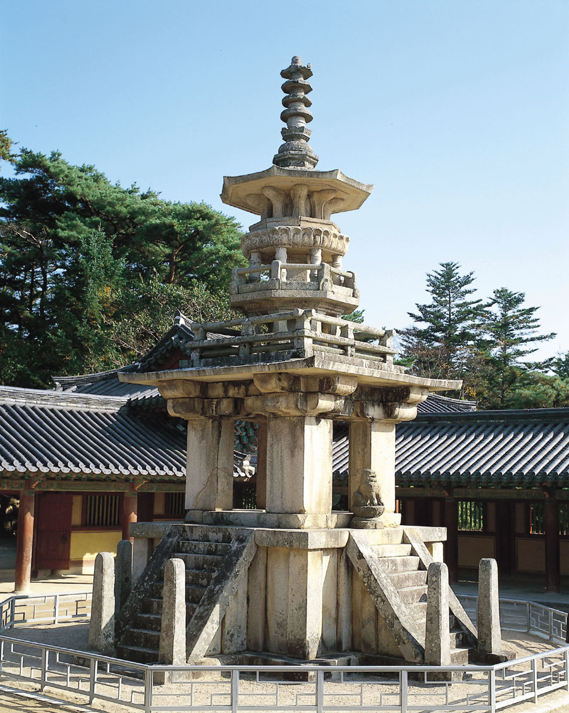

석굴암

석굴암은 신라 시대에 지어진 아주 특별한 건축물입니다. 지금으로부터 약 1,300년 전, 신라의 재상이었던 김대성이라는 사람이이 만들기 시작하여 23년 만에 완성했다고 해요. 원래는 석불사라고 불렸습니다. 석굴암은 불국사나 다보탑처럼 신라 불교 예술이 가장 발전했던 시기에 만들어진 귀한 문화유산입니다.
석굴암의 놀라운 구조
석굴암은 토함산 중턱에 있는 커다란 화강암을 깎아 만들었어요. 입구에 해당하는 네모난 앞방과 둥근 모양의 주요 방이 있고, 이 두 방이 통로로 연결되어 있습니다. 특히, 360여 개의 돌을 정교하게 쌓아 둥근 천장을 만든 기술은 세계적으로도 매우 뛰어나다고 알려져 있습니다.
석굴암 속 부처님들
석굴암 내부에는 여러 불상들이 조각되어 있습니다. 앞방에는 팔부신장상이, 통로에는 사나운 표정의 금강역사상과 동서남북을 지키는 사천왕상이 새겨져 있습니다.
둥근 주요 방의 가운데에는 석굴암의 주인공인 본존불이 앉아 계세요. 본존불의 뒤쪽 벽에는 천 개의 얼굴을 가진 십일면관음보살상이 서 있습니다. 이 외에도 다양한 모습의 보살상과 제자상 등 총 38구의 불상이 조각되어 있습니다.
이 모든 조각들은 매우 정교하고 살아있는 듯한 표정을 하고 있어서 동아시아 불교 예술의 최고 걸작으로 손꼽히고 있습니다.
석굴암의 가치
석굴암은 뛰어난 건축 기술과 예술성이 함께 담겨 있어 더욱 특별합니다. 이 귀한 가치를 인정받아, 1995년에는 유네스코 세계문화유산으로 지정되었습니다. 현재는 석굴 내부를 보호하기 위해 유리벽을 통해 관람하고 있습니다.
불국사
불국사는 지금으로부터 약 1300년 전, 통일신라 시대에 김대성이라는 사람이 만든 절이에요. 김대성은 불국사를 지어서 과거, 현재, 미래의 부처가 사는 아름다운 세상을 만들고 싶어 했어요.
불국사에는 아주 재미있는 이야기가 전해져요. 김대성이라는 사람은 전생의 부모님을 위해 석굴암을 만들고, 지금의 부모님을 위해 불국사를 만들었다고 해요. 하지만 안타깝게도 김대성은 불국사가 완성되기 전에 세상을 떠났어요. 그래서 나라에서 불국사를 이어받아 마저 짓고, 나라의 복을 빌어주는 절로 만들었답니다.
불국사의 보물들
불국사 건물들 자체도 통일신라 시대 사람들이 얼마나 뛰어난 기술을 가졌는지 보여주는 아주 중요한 문화유산이에요. 불국사 안에는 다음과 같은 멋진 보물들이 숨어 있어요.
- 3층 석탑 (=석가탑): 단순하고 깔끔한 모습이 특징이에요. 석가여래의 모습을 상징하는 탑이라고 합니다. 세계에서 가장 오래된 목판 인쇄물 ‘무구정광대다라니경’이 발견된 탑이기도 합니다.
- 다보탑: 석가탑 옆에 있는 탑으로, 복잡하고 화려한 모습이 눈에 띄어요. 다보여래를 상징하는 탑이라고 해요.
- 다른 문화재들: 이 외에도 불국사에는 다양한 석등, 다리, 불상들이 많이 있답니다.
불국사는 단순한 절이 아니라, 신라 사람들이 꿈꾸던 아름다운 세상을 건축물로 표현한 아주 특별한 장소예요.
다보탑
다보탑은 불국사에 있는 아주 특별한 탑입니다. 이 탑은 불국사 대웅전 앞마당의 동쪽에 서 있으며, 서쪽에 있는 석가탑과 마주 보고 있어요. 다보탑은 높이가 약 10.29m로 석가탑과 비슷합니다. 석가탑이 일반적인 탑의 모습을 보여준다면, 다보탑은 아주 독특한 모양을 하고 있답니다.
다보탑과 석가탑이 함께 있는 이유
다보탑과 석가탑이 함께 있는 이유는 부처님들의 이야기를 나타내기 위함입니다. 옛날의 부처님인 다보불이 지금의 부처님인 석가모니 부처님이 가르침을 펼치실 때, 옆에서 그 말씀이 옳다고 증명해주는 모습을 탑으로 표현했다고 해요. 두 탑이 나란히 서 있는 것은 이러한 깊은 의미를 담고 있는 것입니다.
다보탑의 특별한 모습
다보탑은 그 층수를 세기 어려울 정도로 복잡한 모습을 하고 있습니다. 탑의 아래쪽은 열 십(十)자 모양이고, 사방에 돌계단이 있어요. 탑의 몸통은 여덟 모가 난 팔각형으로 되어 있으며, 그 주위를 네모난 돌난간이 둘러싸고 있습니다. 이처럼 네모, 여덟 모, 원 모양을 하나의 탑에 아름답게 표현하여, 당시 신라 시대의 뛰어난 건축 기술을 엿볼 수 있습니다.
슬픈 역사를 간직한 다보탑
안타깝게도 다보탑에는 슬픈 역사가 담겨 있습니다. 우리나라가 일본에 나라를 빼앗겼던 시절, 일본인들이 다보탑을 해체하고 다시 쌓았다고 합니다. 이 과정에 대한 기록이 하나도 남아 있지 않아서, 탑 속에 들어 있었을지도 모를 보물들의 행방을 알 수 없게 되었어요.
또한, 탑 계단 위에는 원래 네 마리의 돌사자가 있었는데, 이 중 세 마리가 사라져버렸고, 지금은 한 마리만 남아 있습니다. 이 사라진 사자들을 되찾기 위해 많은 노력이 있었지만, 아직도 그 행방을 알 수 없다고 합니다.
석가탑

불국사에는 두 개의 탑이 있는데, 바로 석가탑과 다보탑이에요. 두 탑은 절의 대웅전 앞에 사이좋게 서 있으며, 서쪽에 있는 탑이 바로 석가탑입니다.
석가탑과 다보탑을 나란히 세운 이유가 있는데요. 마치 친구가 서로의 말을 증명해주듯, 부처님께서 가르침을 펼치실 때 다른 부처님이 옆에서 그 가르침이 옳은 말이라고 증명해 주는 내용을 표현한 것이라고 합니다. 석가탑과 다보탑은 높이가 비슷합니다. 두 탑 모두 우리나라를 대표하는 아주 중요한 탑입니다.
석가탑은 어떻게 생겼을까요?
석가탑은 불국사가 세워진 약 1,300년 전에 함께 만들어졌을 것으로 추측합니다. 2층의 단단한 받침돌(기단) 위에 3층의 몸돌(탑신)을 올린 모양이에요. 탑 전체의 무게를 잘 견딜 수 있도록 2층의 받침돌을 튼튼하게 만들었으며, 지붕돌의 모서리는 하늘을 향해 살짝 올라가 있어 탑이 더욱 경쾌하고 멋있어 보입니다.
탑 안에서 나온 놀라운 보물
1966년, 불행하게도 도둑들이 탑을 훼손하는 일이 있었어요. 그래서 탑을 수리하던 중, 탑 안에서 부처님의 사리를 모시던 공간을 발견하게 되었답니다. 그 안에서는 여러 보물들과 함께 '무구정광대다라니경'이라는 귀한 두루마리가 나왔습니다.
이것은 세계에서 가장 오래된 인쇄물로, 당시의 훌륭한 인쇄 기술을 보여줍니다.
슬픈 전설이 깃든 무영탑
석가탑은 '그림자가 비치지 않는 탑'이라는 뜻의 무영탑이라고도 불립니다. 여기에는 슬픈 전설이 전해지고 있어요. 탑을 만든 장인 '아사달'을 찾아 그의 아내 '아사녀'가 신라에 왔지만, 남편을 만나지 못한 채 연못에 몸을 던져야 했다는 이야기입니다.
정효공주 무덤


정효공주 무덤은 중국 지린성에 있는 발해 시대의 무덤입니다. 발해의 세 번째 왕인 문왕의 넷째 딸인 정효공주가 잠들어 있는 곳이지요. 공주님은 서기 757년에 태어나 36살의 나이로 돌아가셨다고 해요. 이 무덤은 1980년과 1981년에 발견되었는데, 벽돌과 돌판으로 만들어졌고, 무덤 안으로 들어가는 길, 문, 방 등 여러 부분으로 나뉘어 있습니다.
무덤의 특별한 모습
정효공주 무덤은 고구려와 당나라의 무덤 만드는 방법이 섞여 있어요. 무덤 벽은 당나라 방식처럼 벽돌로 쌓았고, 천장은 고구려 방식처럼 돌을 겹쳐서 만들었습니다. 특히, 이 무덤 위에는 탑을 쌓은 흔적이 남아 있습니다. 무덤 위에 탑을 올리는 방식은 발해 무덤에서만 볼 수 있는 아주 독특한 특징입니다. 아쉽게도 이 탑은 이미 무너져 기초 부분만 남아 있답니다.
무덤 속 보물들
무덤은 일찍이 도굴되어 많은 보물들이 사라졌지만, 발굴 과정에서 몇 가지 중요한 유물이 발견되었어요. 그중에서도 특히 중요한 것은 벽화와 묘비입니다. 벽화에는 12명의 사람이 그려져 있는데, 이 그림을 통해 발해 사람들의 모습을 처음으로 알게 되었습니다. 무덤에서 일하던 병사나 시종, 악사 같은 사람들의 모습이 담겨 있어요. 그림 속 사람들은 통통한 뺨을 가지고 있는데, 이것은 당나라 그림의 영향을 받은 것으로 보입니다. 무덤에서 발견된 묘비에는 공주님의 이름과 생애가 자세히 기록되어 있어요. 비문에 쓰인 글씨를 통해 당시 발해 사람들이 유교 사상을 중요하게 여겼다는 것을 알 수 있습니다. 이처럼 정효공주 무덤은 발해의 역사와 문화를 연구하는 데 매우 중요한 자료를 제공하고 있습니다.
출처: 한국학중앙연구원. 한국문화대백과사전 - 정효공주묘
이불병좌상
이불병좌상은 중국 지린성 훈춘현의 옛 성터에서 발견된 발해 시대 불상입니다. 높이가 29cm 정도 되는 작은 불상으로, 현재 일본 도쿄국립박물관에 소장되어 있습니다. 이 불상은 발해에서 만들어진 이불병좌상 중에서 가장 완전한 형태를 간직하고 있습니다.
이불병좌상의 의미
'이불병좌상'은 이름 그대로 두 분의 부처님이 나란히 앉아 있는 모습을 표현한 불상입니다. 이것은 불교의 중요한 경전인 『법화경』의 내용을 조각으로 만든 것이에요. 석가모니 부처님이 설법하실 때, 다보 부처님이 보물탑 안에서 나와 그 설법이 옳다고 증명해주는 모습을 나타냅니다.
이불병좌상의 특별한 특징들
이 불상은 두 분의 부처님이 네모난 받침대 위에 나란히 앉아 있는 모습이며, 그 옆에는 두 명의 보조 불상이 서 있습니다. 두 부처님의 얼굴은 통통한 달걀형이고, 눈은 가늘며 입가에 부드러운 미소가 있어요. 몸에 걸친 옷은 두꺼워서 몸의 굴곡이 잘 드러나지 않습니다. 특히, 이 불상의 양 옆에 있는 보조 불상들이 독특한데요. 한 명은 보살처럼 꾸며져 있고, 다른 한 명은 스님처럼 머리를 깎은 모습입니다. 이렇게 보살상과 스님상이 함께 있는 것은 다른 나라에서는 보기 힘든, 발해 불상만의 특별한 특징이라고 할 수 있습니다.
고구려의 기술을 담은 불상
이 불상은 여러 가지 면에서 고구려 불상의 특징을 이어받고 있어요. 섬세하게 조각된 연꽃이나 두꺼운 옷의 주름 표현 등에서 고구려 불상을 만든 기술이 느껴집니다. 학자들은 이 불상이 발해가 나라를 세운 초기인 서기 700년경에 만들어진 것으로 보고 있습니다.
출처: 임석규. 한국문화대백과사전 - 이불병좌상
상경성 절터
발해 상경성 2호 절터는 중국 헤이룽장성 닝안시에 있는 발해 시대의 절터입니다. 지금은 건물이 남아있지 않고 터만 남아있으며, 예전에는 석불사나 흥륭사로 불렸다고 합니다.
절터에서 발견된 석등
이곳에서 가장 유명한 유물은 높이 약 6m에 달하는 현무암으로 만든 팔각형 석등입니다. 받침대에는 활짝 핀 연꽃무늬가 새겨져 있고, 불을 밝히는 등은 팔각형 집 모양으로 지붕의 기와 하나하나까지 섬세하게 표현되어 있어 발해 사람들의 뛰어난 기술을 보여줍니다.
남아있는 흔적들
절터에는 지금도 당시의 기와, 벽돌, 주춧돌 등이 많이 남아 있습니다. 이 절터는 발해의 건축과 예술, 불교 문화를 연구하는 데 아주 중요한 장소입니다.